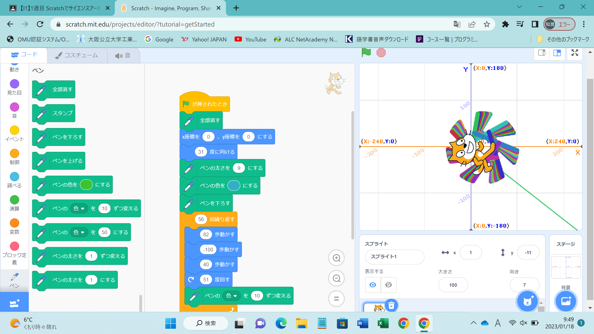
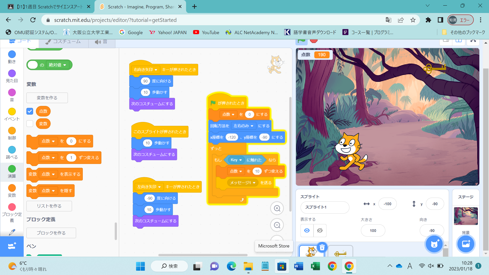

1週目のレポート ： 公大高専１年実習I-1
1B班37番 applle
第1週目
1-1 サイエンスアート

1.内容
スクラッチを使ってサイエンスアートを作成した。繰り返し移動させることにより、図形を描いた。次に、猫を移動させた。背景も設定し、完成させた。
2.感想
猫の動きに合わせて線を引いたり、猫を移動させたりと、様々な工夫ができると思った。
1-2 ゲーム

1.内容
鍵を落として、その位置と落下速度をランダムにする。点数や音をつけたりもできる。いろんな機能を 追加していくと、ゲームとしてのクオリティーが上がる。
2.感想
ゲームってこうやってプログラミングしていって、作り上げるものなんだと思った。
1-3 ホームページ作成
私のホームページ
1.内容
githubのアカウントを作った。次に、ホームページを作成していき、第１週目のレポートに取り掛かった。
2.感想
先生の説明を聞いて順調に進めることができたので、よかった。